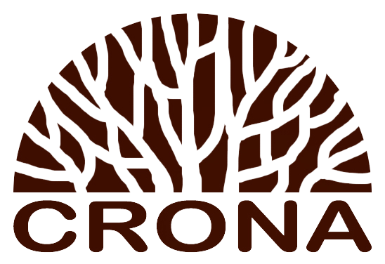

Это размеренный, трудоёмкий, но самый безопасный способ. Все спиленные части имеют небольшой вес,
поэтому ими легче управлять - высчитывать точную траекторию спуска или падения.
В данном случае исключаются все возможные риски как для исполнителя, так и для заказчика.
Минимальная цена заказа составляет 12000р. Выезд на просмотр и оценка заказа – бесплатные.
Степень сложности работ зависит не только от высоты и диаметра дерева, а от свободного пространства под деревом,
уровня наклона ствола, возраста и состояния дерева. Степень сложности оценивается на месте специалистом.
Мы не занижаем цену в рекламных целях.
Сотрудничая с нами вы экономите время, нервы и деньги.
Деревья, имеющие минимальную степень сложности, при удалении частями цена за одно дерево от 8000р. до 12000р. В стоимость входит: распил ствола на части по 35-40см. и ветвей на части по 1,5м., перенос и складирование частей на участке в радиусе 50м.(по прямой). При дополнительных условиях – цена договорная.
Деревья, имеющие среднюю степень сложности, при удалении частями цена за одно дерево от 12000р. до 18000р. В стоимость входит: распил ствола на части по 35-40см. и ветвей на части по 1,5м., перенос и складирование частей на участке в радиусе 50м.(по прямой). При дополнительных условиях – цена договорная.
Деревья, имеющие высокую степень сложности, аварийные деревья, при удалении частями цена за одно дерево от 18000р. В стоимость входит: распил ствола на части по 35-40см. и ветвей на части по 1,5м., перенос и складирование частей на участке в радиусе 50м.(по прямой). При дополнительных условиях – цена договорная.
Удаление деревьев методом валки включает в себя ряд действий, направленных на минимизацию негативных последствий. Важно учитывать не только сохранение инфраструктуры,
но и воздействие на окружающую среду, включая биоту — сообщество живых организмов, обитающих в данной местности.
Поспешность или небрежность при валке могут нанести ущерб соседним растениям и корневым зонам,
что негативно скажется на экосистеме в целом.
Зима считается наилучшим периодом для проведения работ по удалению деревьев цериком или большими частями(в два приёма).
В это время года растения находятся в состоянии глубокого покоя, а промерзшая почва менее подвержена повреждениям.
Деревья становятся более устойчивыми благодаря замерзшему грунту, особенно при наличии поверхностной корневой системы.
Лиственные виды теряют свою парусность, а древесина становится легче из-за меньшего содержания влаги.